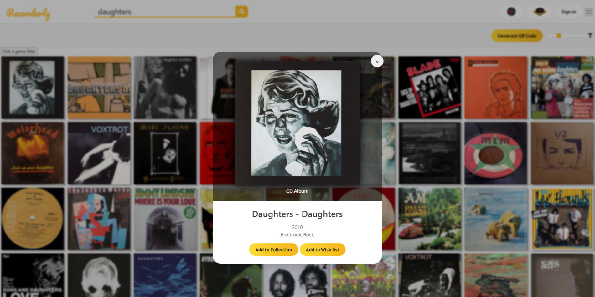

A travel-centric information network updated by its users.
Introduction
Learning a JavaScript framework had been on my 'TODO' list for quite some time. Some days, I would sit down with a 12hr Youtube video walking through a full React build from beginning to end, but as it is for many of us - life gets in the way.
Part of the reason for this is never having a solid idea for a project - but after flicking through some photos from a recent trip to Japan, an idea dawned. A photo-based social platform, with gallery's grouped based on location and each image carrying an accompanying story.
Many image sharing sites put the full focus on the image itself, however the story that accompany's can be just as important.
Overview
Trave.lr is a fully responsive social network web app which is being built in the React framework.
Trave.lr combines imagery and story-telling and provides a platform for users to share their favourite travel-releated photography along with an accompanying short story, explanation or thought.
Design
When designing Trave.lr I first looked into the designs of many successful travel sites. These often featured image-driven hero banners and simple iconography for navigation.
I also looked at the design of image sharing sites such as Instagram and Flickr, as Trave.lr will be largely image driven.


Technical
React Router
The React Router would be used for page navigation, as it is easy to understand and performs very well.
Integrating a database
I plan on utilising Google Firebase as a database service for this app. This will provide a secure and fully-functional noSQL database for user stories and images, whilst negating the need for me to write a ground-up in Node.js.
Plus, Firebase is a largely mobile-centric service - much like my design.
To come